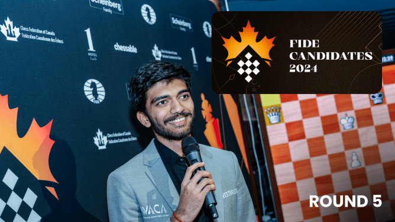
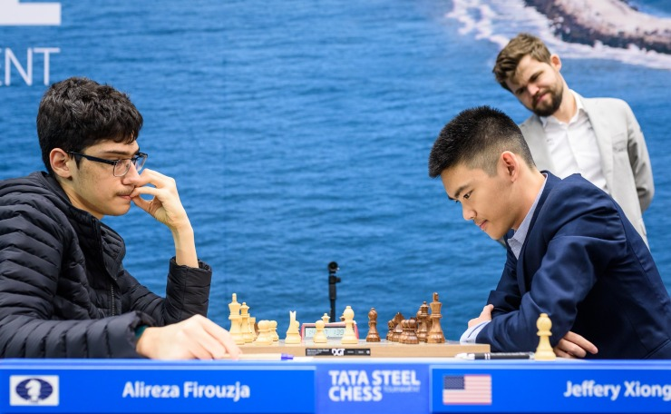
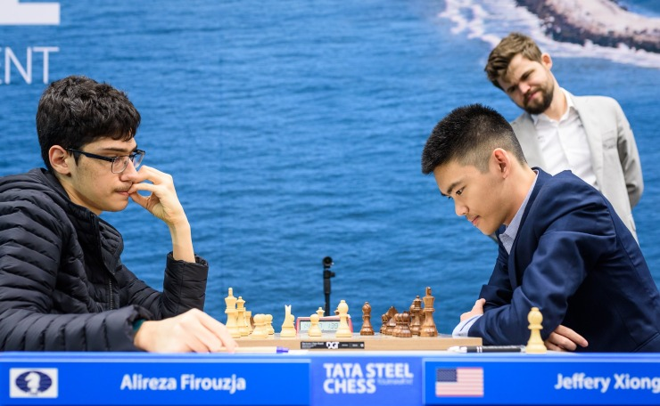

News and Articles

Firouzja Knocks Gukesh Out Of Lead, Nepomniachtchi Heads Tournament Again
At the halfway mark of the 2024 FIDE Candidates Tournament, GM Ian Nepomniachtchi is back in the
sole lead. In round seven, he survived over 20 moves of preparation from GM Hikaru Nakamura to
make the draw.
READ MORE
Carlsen On Candidates, His Classical Chess Future, Freestyle Chess, And More
In a fresh podcast interview released Monday, GM Magnus Carlsen talked about his two favorites
for the Candidates Tournament that begins in Toronto on April 4, his future in classical events,
his new motivation, the Chess960 tour, and much more.
READ MORE

Gukesh Joins Lead, Nepomniachtchi Survives Praggnanandhaa's Killer Preparation
After close to six hours of play and in the longest round of the 2024 FIDE Candidates Tournament
so far, GM Gukesh Dommaraju defeated GM Nijat Abasov to catch GM Ian Nepomniachtchi in the lead.
Nepomniachtchi, on the other hand, survived a lost position out of the opening by a miracle
against GM Praggnanandhaa Rameshbabu.
READ MORE
 
